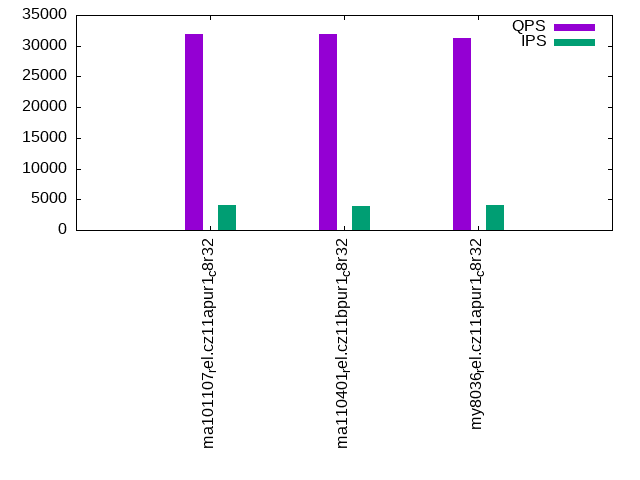

This is a report for the insert benchmark with 48M docs and 4 client(s). It is generated by scripts (bash, awk, sed) and Tufte might not be impressed. An overview of the insert benchmark is here and a short update is here. Below, by DBMS, I mean DBMS+version.config. An example is my8020.c10b40 where my means MySQL, 8020 is version 8.0.20 and c10b40 is the name for the configuration file.
The test server has 8 AMD cores, 32G RAM and an NVMe SSD. It is described here as the ASUS PN53. The benchmark was run with 1 client and there were 1 or 3 connections per client (1 for queries or inserts without rate limits, 1+1 for rate limited inserts+deletes). It uses 4 tables with a table per client. It loads 12M rows per table without secondary indexes, creates 3 secondary indexes per table, then inserts 40 rows per table with a delete per insert to avoid growing the table. It then does 6 read+write tests for 1800s each that do queries as fast as possible with 100,100,500,500,1000,1000 inserts/s and the same for deletes/s per client concurrent with the queries. The database is cached in memory. Clients and the DBMS share one server. The per-database configs are in the per-database subdirectories here.
The tested DBMS are:
The numbers are inserts/s for l.i0, l.i1 and l.i2, indexed docs (or rows) /s for l.x and queries/s for qr100, qp100 thru qr1000, qp1000" The values are the average rate over the entire test for inserts (IPS) and queries (QPS). The range of values for IPS and QPS is split into 3 parts: bottom 25%, middle 50%, top 25%. Values in the bottom 25% have a red background, values in the top 25% have a green background and values in the middle have no color. A gray background is used for values that can be ignored because the DBMS did not sustain the target insert rate. Red backgrounds are not used when the minimum value is within 80% of the max value.
| dbms | l.i0 | l.x | l.i1 | l.i2 | qr100 | qp100 | qr500 | qp500 | qr1000 | qp1000 |
|---|---|---|---|---|---|---|---|---|---|---|
| ma101107_rel.cz11apur1_c8r32 | 466019 | 774195 | 62530 | 34115 | 32921 | 28142 | 32371 | 27836 | 31977 | 27367 |
| ma110401_rel.cz11bpur1_c8r32 | 470588 | 695654 | 59452 | 32620 | 32774 | 27960 | 32452 | 27740 | 31931 | 27384 |
| my8036_rel.cz11apur1_c8r32 | 372093 | 705884 | 57296 | 21813 | 31955 | 23736 | 31840 | 23571 | 31321 | 23278 |
This table has relative throughput, throughput for the DBMS relative to the DBMS in the first line, using the absolute throughput from the previous table. Values less than 0.95 have a yellow background. Values greater than 1.05 have a blue background.
| dbms | l.i0 | l.x | l.i1 | l.i2 | qr100 | qp100 | qr500 | qp500 | qr1000 | qp1000 |
|---|---|---|---|---|---|---|---|---|---|---|
| ma101107_rel.cz11apur1_c8r32 | 1.00 | 1.00 | 1.00 | 1.00 | 1.00 | 1.00 | 1.00 | 1.00 | 1.00 | 1.00 |
| ma110401_rel.cz11bpur1_c8r32 | 1.01 | 0.90 | 0.95 | 0.96 | 1.00 | 0.99 | 1.00 | 1.00 | 1.00 | 1.00 |
| my8036_rel.cz11apur1_c8r32 | 0.80 | 0.91 | 0.92 | 0.64 | 0.97 | 0.84 | 0.98 | 0.85 | 0.98 | 0.85 |
This lists the average rate of inserts/s for the tests that do inserts concurrent with queries. For such tests the query rate is listed in the table above. The read+write tests are setup so that the insert rate should match the target rate every second. Cells that are not at least 95% of the target have a red background to indicate a failure to satisfy the target.
| dbms | qr100.L1 | qp100.L2 | qr500.L3 | qp500.L4 | qr1000.L5 | qp1000.L6 |
|---|---|---|---|---|---|---|
| ma101107_rel.cz11apur1_c8r32 | 399 | 399 | 1993 | 1994 | 3989 | 3989 |
| ma110401_rel.cz11bpur1_c8r32 | 399 | 399 | 1994 | 1994 | 3987 | 3987 |
| my8036_rel.cz11apur1_c8r32 | 399 | 399 | 1993 | 1994 | 3989 | 3989 |
| target | 400 | 400 | 2000 | 2000 | 4000 | 4000 |
l.i0: load without secondary indexes. Graphs for performance per 1-second interval are here.
Average throughput:
Insert response time histogram: each cell has the percentage of responses that take <= the time in the header and max is the max response time in seconds. For the max column values in the top 25% of the range have a red background and in the bottom 25% of the range have a green background. The red background is not used when the min value is within 80% of the max value.
| dbms | 256us | 1ms | 4ms | 16ms | 64ms | 256ms | 1s | 4s | 16s | gt | max |
|---|---|---|---|---|---|---|---|---|---|---|---|
| ma101107_rel.cz11apur1_c8r32 | 89.152 | 10.508 | 0.305 | 0.018 | 0.017 | 0.182 | |||||
| ma110401_rel.cz11bpur1_c8r32 | 89.670 | 9.994 | 0.308 | 0.012 | 0.017 | 0.229 | |||||
| my8036_rel.cz11apur1_c8r32 | 97.095 | 2.449 | 0.361 | 0.086 | 0.010 | 0.144 |
Performance metrics for the DBMS listed above. Some are normalized by throughput, others are not. Legend for results is here.
ips qps rps rmbps wps wmbps rpq rkbpq wpi wkbpi csps cpups cspq cpupq dbgb1 dbgb2 rss maxop p50 p99 tag 466019 0 0 0.0 1888.0 120.0 0.000 0.000 0.004 0.264 48154 73.5 0.103 13 3.2 34.0 3.5 0.182 133358 109184 ma101107_rel.cz11apur1_c8r32 470588 0 0 0.0 1890.0 119.9 0.000 0.000 0.004 0.261 49993 73.8 0.106 13 3.2 34.0 3.5 0.229 132559 100694 ma110401_rel.cz11bpur1_c8r32 372093 0 0 0.0 1495.7 109.1 0.000 0.000 0.004 0.300 39412 64.1 0.106 14 3.2 33.8 5.1 0.144 103990 75168 my8036_rel.cz11apur1_c8r32
l.x: create secondary indexes.
Average throughput:
Performance metrics for the DBMS listed above. Some are normalized by throughput, others are not. Legend for results is here.
ips qps rps rmbps wps wmbps rpq rkbpq wpi wkbpi csps cpups cspq cpupq dbgb1 dbgb2 rss maxop p50 p99 tag 774195 0 0 0.0 6633.6 568.1 0.000 0.000 0.009 0.751 11080 45.1 0.014 5 7.2 38.0 7.1 0.001 NA NA ma101107_rel.cz11apur1_c8r32 695654 0 0 0.0 6391.3 533.4 0.000 0.000 0.009 0.785 11455 44.4 0.016 5 7.2 38.0 6.6 1.843 NA NA ma110401_rel.cz11bpur1_c8r32 705884 0 3774 236.1 12784.3 744.9 0.005 0.342 0.018 1.081 35942 89.6 0.051 10 7.3 37.9 7.7 0.004 NA NA my8036_rel.cz11apur1_c8r32
l.i1: continue load after secondary indexes created with 50 inserts per transaction. Graphs for performance per 1-second interval are here.
Average throughput:
Insert response time histogram: each cell has the percentage of responses that take <= the time in the header and max is the max response time in seconds. For the max column values in the top 25% of the range have a red background and in the bottom 25% of the range have a green background. The red background is not used when the min value is within 80% of the max value.
| dbms | 256us | 1ms | 4ms | 16ms | 64ms | 256ms | 1s | 4s | 16s | gt | max |
|---|---|---|---|---|---|---|---|---|---|---|---|
| ma101107_rel.cz11apur1_c8r32 | 6.033 | 91.772 | 1.527 | 0.057 | 0.057 | 0.554 | 0.323 | ||||
| ma110401_rel.cz11bpur1_c8r32 | 14.169 | 82.965 | 1.953 | 0.252 | 0.077 | 0.584 | 0.390 | ||||
| my8036_rel.cz11apur1_c8r32 | 95.412 | 2.933 | 0.134 | 1.520 | 0.141 |
Delete response time histogram: each cell has the percentage of responses that take <= the time in the header and max is the max response time in seconds. For the max column values in the top 25% of the range have a red background and in the bottom 25% of the range have a green background. The red background is not used when the min value is within 80% of the max value.
| dbms | 256us | 1ms | 4ms | 16ms | 64ms | 256ms | 1s | 4s | 16s | gt | max |
|---|---|---|---|---|---|---|---|---|---|---|---|
| ma101107_rel.cz11apur1_c8r32 | 34.696 | 63.206 | 1.440 | 0.048 | 0.068 | 0.542 | 0.322 | ||||
| ma110401_rel.cz11bpur1_c8r32 | 42.335 | 54.953 | 1.827 | 0.226 | 0.087 | 0.572 | 0.372 | ||||
| my8036_rel.cz11apur1_c8r32 | 14.134 | 81.348 | 2.928 | 0.108 | 1.483 | 0.140 |
Performance metrics for the DBMS listed above. Some are normalized by throughput, others are not. Legend for results is here.
ips qps rps rmbps wps wmbps rpq rkbpq wpi wkbpi csps cpups cspq cpupq dbgb1 dbgb2 rss maxop p50 p99 tag 62530 0 1502 5.9 5446.6 168.8 0.024 0.096 0.087 2.764 53375 49.0 0.854 63 12.8 45.0 14.2 0.323 18138 150 ma101107_rel.cz11apur1_c8r32 59452 0 1471 5.7 5380.3 160.8 0.025 0.099 0.090 2.770 52506 46.2 0.883 62 12.9 45.0 14.2 0.390 14485 150 ma110401_rel.cz11bpur1_c8r32 57296 0 104 1.6 4548.7 154.1 0.002 0.029 0.079 2.754 29265 52.8 0.511 74 13.0 44.9 15.9 0.141 14284 7492 my8036_rel.cz11apur1_c8r32
l.i2: continue load after secondary indexes created with 5 inserts per transaction. Graphs for performance per 1-second interval are here.
Average throughput:
Insert response time histogram: each cell has the percentage of responses that take <= the time in the header and max is the max response time in seconds. For the max column values in the top 25% of the range have a red background and in the bottom 25% of the range have a green background. The red background is not used when the min value is within 80% of the max value.
| dbms | 256us | 1ms | 4ms | 16ms | 64ms | 256ms | 1s | 4s | 16s | gt | max |
|---|---|---|---|---|---|---|---|---|---|---|---|
| ma101107_rel.cz11apur1_c8r32 | 11.980 | 86.305 | 1.031 | 0.184 | 0.497 | 0.003 | 0.146 | ||||
| ma110401_rel.cz11bpur1_c8r32 | 17.777 | 80.342 | 0.913 | 0.347 | 0.618 | 0.003 | 0.142 | ||||
| my8036_rel.cz11apur1_c8r32 | 0.692 | 93.547 | 3.684 | 1.784 | 0.007 | 0.286 | 0.130 |
Delete response time histogram: each cell has the percentage of responses that take <= the time in the header and max is the max response time in seconds. For the max column values in the top 25% of the range have a red background and in the bottom 25% of the range have a green background. The red background is not used when the min value is within 80% of the max value.
| dbms | 256us | 1ms | 4ms | 16ms | 64ms | 256ms | 1s | 4s | 16s | gt | max |
|---|---|---|---|---|---|---|---|---|---|---|---|
| ma101107_rel.cz11apur1_c8r32 | 16.434 | 81.854 | 1.031 | 0.181 | 0.497 | 0.003 | 0.146 | ||||
| ma110401_rel.cz11bpur1_c8r32 | 21.802 | 76.348 | 0.912 | 0.318 | 0.617 | 0.003 | 0.142 | ||||
| my8036_rel.cz11apur1_c8r32 | 1.876 | 92.393 | 3.657 | 1.781 | 0.007 | 0.285 | 0.130 |
Performance metrics for the DBMS listed above. Some are normalized by throughput, others are not. Legend for results is here.
ips qps rps rmbps wps wmbps rpq rkbpq wpi wkbpi csps cpups cspq cpupq dbgb1 dbgb2 rss maxop p50 p99 tag 34115 0 4682 18.3 4205.9 144.1 0.137 0.549 0.123 4.325 142515 66.0 4.177 155 12.8 45.0 14.2 0.146 11088 160 ma101107_rel.cz11apur1_c8r32 32620 0 4426 17.3 4138.9 137.4 0.136 0.543 0.127 4.315 136772 62.3 4.193 153 12.9 45.0 14.2 0.142 11007 165 ma110401_rel.cz11bpur1_c8r32 21813 0 0 0.0 3167.2 108.3 0.000 0.000 0.145 5.086 76001 50.6 3.484 186 13.0 44.9 16.1 0.130 5932 909 my8036_rel.cz11apur1_c8r32
qr100.L1: range queries with 100 insert/s per client. Graphs for performance per 1-second interval are here.
Average throughput:
Query response time histogram: each cell has the percentage of responses that take <= the time in the header and max is the max response time in seconds. For max values in the top 25% of the range have a red background and in the bottom 25% of the range have a green background. The red background is not used when the min value is within 80% of the max value.
| dbms | 256us | 1ms | 4ms | 16ms | 64ms | 256ms | 1s | 4s | 16s | gt | max |
|---|---|---|---|---|---|---|---|---|---|---|---|
| ma101107_rel.cz11apur1_c8r32 | 99.992 | 0.008 | 0.001 | 0.003 | |||||||
| ma110401_rel.cz11bpur1_c8r32 | 99.992 | 0.007 | 0.001 | 0.002 | |||||||
| my8036_rel.cz11apur1_c8r32 | 99.970 | 0.030 | nonzero | 0.002 |
Insert response time histogram: each cell has the percentage of responses that take <= the time in the header and max is the max response time in seconds. For max values in the top 25% of the range have a red background and in the bottom 25% of the range have a green background. The red background is not used when the min value is within 80% of the max value.
| dbms | 256us | 1ms | 4ms | 16ms | 64ms | 256ms | 1s | 4s | 16s | gt | max |
|---|---|---|---|---|---|---|---|---|---|---|---|
| ma101107_rel.cz11apur1_c8r32 | 1.424 | 57.028 | 41.549 | 0.012 | |||||||
| ma110401_rel.cz11bpur1_c8r32 | 1.146 | 52.660 | 46.194 | 0.012 | |||||||
| my8036_rel.cz11apur1_c8r32 | 99.542 | 0.451 | 0.007 | 0.102 |
Delete response time histogram: each cell has the percentage of responses that take <= the time in the header and max is the max response time in seconds. For max values in the top 25% of the range have a red background and in the bottom 25% of the range have a green background. The red background is not used when the min value is within 80% of the max value.
| dbms | 256us | 1ms | 4ms | 16ms | 64ms | 256ms | 1s | 4s | 16s | gt | max |
|---|---|---|---|---|---|---|---|---|---|---|---|
| ma101107_rel.cz11apur1_c8r32 | 13.514 | 44.944 | 41.542 | 0.012 | |||||||
| ma110401_rel.cz11bpur1_c8r32 | 10.632 | 43.188 | 46.181 | 0.011 | |||||||
| my8036_rel.cz11apur1_c8r32 | 48.785 | 50.847 | 0.354 | 0.007 | 0.007 | 0.101 |
Performance metrics for the DBMS listed above. Some are normalized by throughput, others are not. Legend for results is here.
ips qps rps rmbps wps wmbps rpq rkbpq wpi wkbpi csps cpups cspq cpupq dbgb1 dbgb2 rss maxop p50 p99 tag 399 32921 8 0.0 5.3 0.5 0.000 0.001 0.013 1.198 125819 52.1 3.822 127 12.8 45.0 13.9 0.003 8247 8122 ma101107_rel.cz11apur1_c8r32 399 32774 8 0.0 11.8 0.6 0.000 0.001 0.030 1.655 125317 52.2 3.824 127 12.9 45.0 13.9 0.002 8170 8087 ma110401_rel.cz11bpur1_c8r32 399 31955 0 0.0 593.3 15.2 0.000 0.000 1.488 39.012 123691 51.9 3.871 130 13.0 44.9 16.2 0.002 7991 7902 my8036_rel.cz11apur1_c8r32
qp100.L2: point queries with 100 insert/s per client. Graphs for performance per 1-second interval are here.
Average throughput:
Query response time histogram: each cell has the percentage of responses that take <= the time in the header and max is the max response time in seconds. For max values in the top 25% of the range have a red background and in the bottom 25% of the range have a green background. The red background is not used when the min value is within 80% of the max value.
| dbms | 256us | 1ms | 4ms | 16ms | 64ms | 256ms | 1s | 4s | 16s | gt | max |
|---|---|---|---|---|---|---|---|---|---|---|---|
| ma101107_rel.cz11apur1_c8r32 | 99.939 | 0.061 | nonzero | 0.002 | |||||||
| ma110401_rel.cz11bpur1_c8r32 | 99.937 | 0.061 | 0.002 | 0.002 | |||||||
| my8036_rel.cz11apur1_c8r32 | 99.606 | 0.394 | nonzero | 0.002 |
Insert response time histogram: each cell has the percentage of responses that take <= the time in the header and max is the max response time in seconds. For max values in the top 25% of the range have a red background and in the bottom 25% of the range have a green background. The red background is not used when the min value is within 80% of the max value.
| dbms | 256us | 1ms | 4ms | 16ms | 64ms | 256ms | 1s | 4s | 16s | gt | max |
|---|---|---|---|---|---|---|---|---|---|---|---|
| ma101107_rel.cz11apur1_c8r32 | 11.361 | 87.250 | 1.389 | 0.013 | |||||||
| ma110401_rel.cz11bpur1_c8r32 | 0.521 | 54.153 | 45.326 | 0.012 | |||||||
| my8036_rel.cz11apur1_c8r32 | 99.882 | 0.097 | 0.021 | 0.023 |
Delete response time histogram: each cell has the percentage of responses that take <= the time in the header and max is the max response time in seconds. For max values in the top 25% of the range have a red background and in the bottom 25% of the range have a green background. The red background is not used when the min value is within 80% of the max value.
| dbms | 256us | 1ms | 4ms | 16ms | 64ms | 256ms | 1s | 4s | 16s | gt | max |
|---|---|---|---|---|---|---|---|---|---|---|---|
| ma101107_rel.cz11apur1_c8r32 | 68.299 | 30.250 | 1.451 | 0.012 | |||||||
| ma110401_rel.cz11bpur1_c8r32 | 5.729 | 48.611 | 45.660 | 0.012 | |||||||
| my8036_rel.cz11apur1_c8r32 | 36.618 | 63.264 | 0.097 | 0.021 | 0.023 |
Performance metrics for the DBMS listed above. Some are normalized by throughput, others are not. Legend for results is here.
ips qps rps rmbps wps wmbps rpq rkbpq wpi wkbpi csps cpups cspq cpupq dbgb1 dbgb2 rss maxop p50 p99 tag 399 28142 0 0.0 23.7 1.0 0.000 0.000 0.059 2.440 112321 52.0 3.991 148 12.8 45.0 13.9 0.002 7032 6953 ma101107_rel.cz11apur1_c8r32 399 27960 8 0.0 11.5 0.6 0.000 0.001 0.029 1.567 111543 51.9 3.989 149 12.9 45.0 13.9 0.002 6987 6907 ma110401_rel.cz11bpur1_c8r32 399 23736 0 0.0 66.6 2.1 0.000 0.000 0.167 5.295 94969 51.2 4.001 173 13.0 44.9 16.2 0.002 5930 5866 my8036_rel.cz11apur1_c8r32
qr500.L3: range queries with 500 insert/s per client. Graphs for performance per 1-second interval are here.
Average throughput:
Query response time histogram: each cell has the percentage of responses that take <= the time in the header and max is the max response time in seconds. For max values in the top 25% of the range have a red background and in the bottom 25% of the range have a green background. The red background is not used when the min value is within 80% of the max value.
| dbms | 256us | 1ms | 4ms | 16ms | 64ms | 256ms | 1s | 4s | 16s | gt | max |
|---|---|---|---|---|---|---|---|---|---|---|---|
| ma101107_rel.cz11apur1_c8r32 | 99.954 | 0.036 | 0.010 | nonzero | nonzero | 0.022 | |||||
| ma110401_rel.cz11bpur1_c8r32 | 99.950 | 0.038 | 0.013 | nonzero | nonzero | 0.016 | |||||
| my8036_rel.cz11apur1_c8r32 | 99.976 | 0.022 | 0.002 | nonzero | 0.010 |
Insert response time histogram: each cell has the percentage of responses that take <= the time in the header and max is the max response time in seconds. For max values in the top 25% of the range have a red background and in the bottom 25% of the range have a green background. The red background is not used when the min value is within 80% of the max value.
| dbms | 256us | 1ms | 4ms | 16ms | 64ms | 256ms | 1s | 4s | 16s | gt | max |
|---|---|---|---|---|---|---|---|---|---|---|---|
| ma101107_rel.cz11apur1_c8r32 | 7.587 | 86.171 | 6.229 | 0.013 | 0.028 | ||||||
| ma110401_rel.cz11bpur1_c8r32 | 2.461 | 87.375 | 10.143 | 0.021 | 0.062 | ||||||
| my8036_rel.cz11apur1_c8r32 | 97.496 | 2.297 | 0.043 | 0.164 | 0.107 |
Delete response time histogram: each cell has the percentage of responses that take <= the time in the header and max is the max response time in seconds. For max values in the top 25% of the range have a red background and in the bottom 25% of the range have a green background. The red background is not used when the min value is within 80% of the max value.
| dbms | 256us | 1ms | 4ms | 16ms | 64ms | 256ms | 1s | 4s | 16s | gt | max |
|---|---|---|---|---|---|---|---|---|---|---|---|
| ma101107_rel.cz11apur1_c8r32 | 38.828 | 55.560 | 5.603 | 0.010 | 0.027 | ||||||
| ma110401_rel.cz11bpur1_c8r32 | 17.339 | 73.460 | 9.188 | 0.014 | 0.032 | ||||||
| my8036_rel.cz11apur1_c8r32 | 53.478 | 44.490 | 1.864 | 0.024 | 0.144 | 0.107 |
Performance metrics for the DBMS listed above. Some are normalized by throughput, others are not. Legend for results is here.
ips qps rps rmbps wps wmbps rpq rkbpq wpi wkbpi csps cpups cspq cpupq dbgb1 dbgb2 rss maxop p50 p99 tag 1993 32371 57 0.2 162.1 5.9 0.002 0.007 0.081 3.047 124628 53.3 3.850 132 12.8 45.0 13.9 0.022 8087 7895 ma101107_rel.cz11apur1_c8r32 1994 32452 57 0.2 168.2 6.0 0.002 0.007 0.084 3.056 124845 53.3 3.847 131 12.9 45.0 13.9 0.016 8103 7817 ma110401_rel.cz11bpur1_c8r32 1993 31840 0 0.0 363.8 11.2 0.000 0.000 0.183 5.768 121963 53.1 3.831 133 13.0 44.9 16.2 0.010 7928 7866 my8036_rel.cz11apur1_c8r32
qp500.L4: point queries with 500 insert/s per client. Graphs for performance per 1-second interval are here.
Average throughput:
Query response time histogram: each cell has the percentage of responses that take <= the time in the header and max is the max response time in seconds. For max values in the top 25% of the range have a red background and in the bottom 25% of the range have a green background. The red background is not used when the min value is within 80% of the max value.
| dbms | 256us | 1ms | 4ms | 16ms | 64ms | 256ms | 1s | 4s | 16s | gt | max |
|---|---|---|---|---|---|---|---|---|---|---|---|
| ma101107_rel.cz11apur1_c8r32 | 99.887 | 0.097 | 0.016 | nonzero | 0.008 | ||||||
| ma110401_rel.cz11bpur1_c8r32 | 99.889 | 0.096 | 0.015 | nonzero | 0.011 | ||||||
| my8036_rel.cz11apur1_c8r32 | 99.604 | 0.391 | 0.005 | 0.001 | 0.013 |
Insert response time histogram: each cell has the percentage of responses that take <= the time in the header and max is the max response time in seconds. For max values in the top 25% of the range have a red background and in the bottom 25% of the range have a green background. The red background is not used when the min value is within 80% of the max value.
| dbms | 256us | 1ms | 4ms | 16ms | 64ms | 256ms | 1s | 4s | 16s | gt | max |
|---|---|---|---|---|---|---|---|---|---|---|---|
| ma101107_rel.cz11apur1_c8r32 | 0.661 | 89.006 | 10.322 | 0.011 | 0.029 | ||||||
| ma110401_rel.cz11bpur1_c8r32 | 1.196 | 87.918 | 10.867 | 0.019 | 0.032 | ||||||
| my8036_rel.cz11apur1_c8r32 | 96.722 | 2.944 | 0.033 | 0.300 | 0.108 |
Delete response time histogram: each cell has the percentage of responses that take <= the time in the header and max is the max response time in seconds. For max values in the top 25% of the range have a red background and in the bottom 25% of the range have a green background. The red background is not used when the min value is within 80% of the max value.
| dbms | 256us | 1ms | 4ms | 16ms | 64ms | 256ms | 1s | 4s | 16s | gt | max |
|---|---|---|---|---|---|---|---|---|---|---|---|
| ma101107_rel.cz11apur1_c8r32 | 14.156 | 76.596 | 9.238 | 0.011 | 0.029 | ||||||
| ma110401_rel.cz11bpur1_c8r32 | 13.908 | 75.981 | 10.100 | 0.011 | 0.032 | ||||||
| my8036_rel.cz11apur1_c8r32 | 39.639 | 57.832 | 2.246 | 0.024 | 0.260 | 0.110 |
Performance metrics for the DBMS listed above. Some are normalized by throughput, others are not. Legend for results is here.
ips qps rps rmbps wps wmbps rpq rkbpq wpi wkbpi csps cpups cspq cpupq dbgb1 dbgb2 rss maxop p50 p99 tag 1994 27836 57 0.2 165.1 6.0 0.002 0.008 0.083 3.065 111952 53.1 4.022 153 12.8 45.0 13.9 0.008 6953 6841 ma101107_rel.cz11apur1_c8r32 1994 27740 56 0.2 170.7 6.0 0.002 0.008 0.086 3.083 111581 53.1 4.022 153 12.9 45.0 13.9 0.011 6936 6811 ma110401_rel.cz11bpur1_c8r32 1994 23571 0 0.0 351.4 11.0 0.000 0.000 0.176 5.630 94416 52.5 4.006 178 13.0 45.0 16.2 0.013 5914 5834 my8036_rel.cz11apur1_c8r32
qr1000.L5: range queries with 1000 insert/s per client. Graphs for performance per 1-second interval are here.
Average throughput:
Query response time histogram: each cell has the percentage of responses that take <= the time in the header and max is the max response time in seconds. For max values in the top 25% of the range have a red background and in the bottom 25% of the range have a green background. The red background is not used when the min value is within 80% of the max value.
| dbms | 256us | 1ms | 4ms | 16ms | 64ms | 256ms | 1s | 4s | 16s | gt | max |
|---|---|---|---|---|---|---|---|---|---|---|---|
| ma101107_rel.cz11apur1_c8r32 | 99.931 | 0.057 | 0.012 | nonzero | 0.012 | ||||||
| ma110401_rel.cz11bpur1_c8r32 | 99.942 | 0.050 | 0.008 | 0.001 | nonzero | 0.031 | |||||
| my8036_rel.cz11apur1_c8r32 | 99.940 | 0.050 | 0.009 | 0.001 | nonzero | 0.024 |
Insert response time histogram: each cell has the percentage of responses that take <= the time in the header and max is the max response time in seconds. For max values in the top 25% of the range have a red background and in the bottom 25% of the range have a green background. The red background is not used when the min value is within 80% of the max value.
| dbms | 256us | 1ms | 4ms | 16ms | 64ms | 256ms | 1s | 4s | 16s | gt | max |
|---|---|---|---|---|---|---|---|---|---|---|---|
| ma101107_rel.cz11apur1_c8r32 | 18.163 | 78.803 | 3.026 | 0.008 | 0.033 | ||||||
| ma110401_rel.cz11bpur1_c8r32 | 32.204 | 65.633 | 2.131 | 0.032 | 0.032 | ||||||
| my8036_rel.cz11apur1_c8r32 | 94.743 | 4.708 | 0.223 | 0.326 | 0.115 |
Delete response time histogram: each cell has the percentage of responses that take <= the time in the header and max is the max response time in seconds. For max values in the top 25% of the range have a red background and in the bottom 25% of the range have a green background. The red background is not used when the min value is within 80% of the max value.
| dbms | 256us | 1ms | 4ms | 16ms | 64ms | 256ms | 1s | 4s | 16s | gt | max |
|---|---|---|---|---|---|---|---|---|---|---|---|
| ma101107_rel.cz11apur1_c8r32 | 64.862 | 32.660 | 2.473 | 0.006 | 0.032 | ||||||
| ma110401_rel.cz11bpur1_c8r32 | 70.389 | 27.787 | 1.808 | 0.016 | 0.032 | ||||||
| my8036_rel.cz11apur1_c8r32 | 43.574 | 52.253 | 3.698 | 0.192 | 0.283 | 0.113 |
Performance metrics for the DBMS listed above. Some are normalized by throughput, others are not. Legend for results is here.
ips qps rps rmbps wps wmbps rpq rkbpq wpi wkbpi csps cpups cspq cpupq dbgb1 dbgb2 rss maxop p50 p99 tag 3989 31977 147 0.6 429.1 14.6 0.005 0.018 0.108 3.754 124707 54.7 3.900 137 12.8 45.0 13.9 0.012 8007 7832 ma101107_rel.cz11apur1_c8r32 3987 31931 125 0.5 446.8 14.8 0.004 0.016 0.112 3.794 124722 54.6 3.906 137 12.9 45.0 13.9 0.031 8039 7816 ma110401_rel.cz11bpur1_c8r32 3989 31321 0 0.0 753.6 23.2 0.000 0.000 0.189 5.966 119836 55.0 3.826 140 13.0 45.0 16.2 0.024 7832 7736 my8036_rel.cz11apur1_c8r32
qp1000.L6: point queries with 1000 insert/s per client. Graphs for performance per 1-second interval are here.
Average throughput:
Query response time histogram: each cell has the percentage of responses that take <= the time in the header and max is the max response time in seconds. For max values in the top 25% of the range have a red background and in the bottom 25% of the range have a green background. The red background is not used when the min value is within 80% of the max value.
| dbms | 256us | 1ms | 4ms | 16ms | 64ms | 256ms | 1s | 4s | 16s | gt | max |
|---|---|---|---|---|---|---|---|---|---|---|---|
| ma101107_rel.cz11apur1_c8r32 | 99.873 | 0.117 | 0.010 | nonzero | nonzero | 0.016 | |||||
| ma110401_rel.cz11bpur1_c8r32 | 99.876 | 0.113 | 0.010 | nonzero | 0.016 | ||||||
| my8036_rel.cz11apur1_c8r32 | 99.499 | 0.478 | 0.021 | 0.002 | nonzero | 0.023 |
Insert response time histogram: each cell has the percentage of responses that take <= the time in the header and max is the max response time in seconds. For max values in the top 25% of the range have a red background and in the bottom 25% of the range have a green background. The red background is not used when the min value is within 80% of the max value.
| dbms | 256us | 1ms | 4ms | 16ms | 64ms | 256ms | 1s | 4s | 16s | gt | max |
|---|---|---|---|---|---|---|---|---|---|---|---|
| ma101107_rel.cz11apur1_c8r32 | 13.897 | 83.936 | 2.162 | 0.006 | 0.035 | ||||||
| ma110401_rel.cz11bpur1_c8r32 | 19.472 | 77.906 | 2.594 | 0.027 | 0.033 | ||||||
| my8036_rel.cz11apur1_c8r32 | 93.152 | 6.215 | 0.201 | 0.432 | 0.115 |
Delete response time histogram: each cell has the percentage of responses that take <= the time in the header and max is the max response time in seconds. For max values in the top 25% of the range have a red background and in the bottom 25% of the range have a green background. The red background is not used when the min value is within 80% of the max value.
| dbms | 256us | 1ms | 4ms | 16ms | 64ms | 256ms | 1s | 4s | 16s | gt | max |
|---|---|---|---|---|---|---|---|---|---|---|---|
| ma101107_rel.cz11apur1_c8r32 | 61.240 | 36.850 | 1.907 | 0.003 | 0.034 | ||||||
| ma110401_rel.cz11bpur1_c8r32 | 60.481 | 37.293 | 2.214 | 0.012 | 0.033 | ||||||
| my8036_rel.cz11apur1_c8r32 | 28.958 | 65.598 | 4.889 | 0.158 | 0.397 | 0.114 |
Performance metrics for the DBMS listed above. Some are normalized by throughput, others are not. Legend for results is here.
ips qps rps rmbps wps wmbps rpq rkbpq wpi wkbpi csps cpups cspq cpupq dbgb1 dbgb2 rss maxop p50 p99 tag 3989 27367 153 0.6 357.9 12.7 0.006 0.022 0.090 3.251 111758 54.8 4.084 160 12.8 45.0 13.9 0.016 6857 6745 ma101107_rel.cz11apur1_c8r32 3987 27384 149 0.6 358.5 12.5 0.005 0.022 0.090 3.203 111875 54.7 4.085 160 12.9 45.0 13.9 0.016 6841 6731 ma110401_rel.cz11bpur1_c8r32 3989 23278 0 0.0 747.0 23.1 0.000 0.000 0.187 5.933 93567 54.4 4.020 187 13.0 45.1 16.2 0.023 5834 5706 my8036_rel.cz11apur1_c8r32
l.i0: load without secondary indexes
Performance metrics for all DBMS, not just the ones listed above. Some are normalized by throughput, others are not. Legend for results is here.
ips qps rps rmbps wps wmbps rpq rkbpq wpi wkbpi csps cpups cspq cpupq dbgb1 dbgb2 rss maxop p50 p99 tag 466019 0 0 0.0 1888.0 120.0 0.000 0.000 0.004 0.264 48154 73.5 0.103 13 3.2 34.0 3.5 0.182 133358 109184 ma101107_rel.cz11apur1_c8r32 470588 0 0 0.0 1890.0 119.9 0.000 0.000 0.004 0.261 49993 73.8 0.106 13 3.2 34.0 3.5 0.229 132559 100694 ma110401_rel.cz11bpur1_c8r32 372093 0 0 0.0 1495.7 109.1 0.000 0.000 0.004 0.300 39412 64.1 0.106 14 3.2 33.8 5.1 0.144 103990 75168 my8036_rel.cz11apur1_c8r32
l.x: create secondary indexes
Performance metrics for all DBMS, not just the ones listed above. Some are normalized by throughput, others are not. Legend for results is here.
ips qps rps rmbps wps wmbps rpq rkbpq wpi wkbpi csps cpups cspq cpupq dbgb1 dbgb2 rss maxop p50 p99 tag 774195 0 0 0.0 6633.6 568.1 0.000 0.000 0.009 0.751 11080 45.1 0.014 5 7.2 38.0 7.1 0.001 NA NA ma101107_rel.cz11apur1_c8r32 695654 0 0 0.0 6391.3 533.4 0.000 0.000 0.009 0.785 11455 44.4 0.016 5 7.2 38.0 6.6 1.843 NA NA ma110401_rel.cz11bpur1_c8r32 705884 0 3774 236.1 12784.3 744.9 0.005 0.342 0.018 1.081 35942 89.6 0.051 10 7.3 37.9 7.7 0.004 NA NA my8036_rel.cz11apur1_c8r32
l.i1: continue load after secondary indexes created with 50 inserts per transaction
Performance metrics for all DBMS, not just the ones listed above. Some are normalized by throughput, others are not. Legend for results is here.
ips qps rps rmbps wps wmbps rpq rkbpq wpi wkbpi csps cpups cspq cpupq dbgb1 dbgb2 rss maxop p50 p99 tag 62530 0 1502 5.9 5446.6 168.8 0.024 0.096 0.087 2.764 53375 49.0 0.854 63 12.8 45.0 14.2 0.323 18138 150 ma101107_rel.cz11apur1_c8r32 59452 0 1471 5.7 5380.3 160.8 0.025 0.099 0.090 2.770 52506 46.2 0.883 62 12.9 45.0 14.2 0.390 14485 150 ma110401_rel.cz11bpur1_c8r32 57296 0 104 1.6 4548.7 154.1 0.002 0.029 0.079 2.754 29265 52.8 0.511 74 13.0 44.9 15.9 0.141 14284 7492 my8036_rel.cz11apur1_c8r32
l.i2: continue load after secondary indexes created with 5 inserts per transaction
Performance metrics for all DBMS, not just the ones listed above. Some are normalized by throughput, others are not. Legend for results is here.
ips qps rps rmbps wps wmbps rpq rkbpq wpi wkbpi csps cpups cspq cpupq dbgb1 dbgb2 rss maxop p50 p99 tag 34115 0 4682 18.3 4205.9 144.1 0.137 0.549 0.123 4.325 142515 66.0 4.177 155 12.8 45.0 14.2 0.146 11088 160 ma101107_rel.cz11apur1_c8r32 32620 0 4426 17.3 4138.9 137.4 0.136 0.543 0.127 4.315 136772 62.3 4.193 153 12.9 45.0 14.2 0.142 11007 165 ma110401_rel.cz11bpur1_c8r32 21813 0 0 0.0 3167.2 108.3 0.000 0.000 0.145 5.086 76001 50.6 3.484 186 13.0 44.9 16.1 0.130 5932 909 my8036_rel.cz11apur1_c8r32
qr100.L1: range queries with 100 insert/s per client
Performance metrics for all DBMS, not just the ones listed above. Some are normalized by throughput, others are not. Legend for results is here.
ips qps rps rmbps wps wmbps rpq rkbpq wpi wkbpi csps cpups cspq cpupq dbgb1 dbgb2 rss maxop p50 p99 tag 399 32921 8 0.0 5.3 0.5 0.000 0.001 0.013 1.198 125819 52.1 3.822 127 12.8 45.0 13.9 0.003 8247 8122 ma101107_rel.cz11apur1_c8r32 399 32774 8 0.0 11.8 0.6 0.000 0.001 0.030 1.655 125317 52.2 3.824 127 12.9 45.0 13.9 0.002 8170 8087 ma110401_rel.cz11bpur1_c8r32 399 31955 0 0.0 593.3 15.2 0.000 0.000 1.488 39.012 123691 51.9 3.871 130 13.0 44.9 16.2 0.002 7991 7902 my8036_rel.cz11apur1_c8r32
qp100.L2: point queries with 100 insert/s per client
Performance metrics for all DBMS, not just the ones listed above. Some are normalized by throughput, others are not. Legend for results is here.
ips qps rps rmbps wps wmbps rpq rkbpq wpi wkbpi csps cpups cspq cpupq dbgb1 dbgb2 rss maxop p50 p99 tag 399 28142 0 0.0 23.7 1.0 0.000 0.000 0.059 2.440 112321 52.0 3.991 148 12.8 45.0 13.9 0.002 7032 6953 ma101107_rel.cz11apur1_c8r32 399 27960 8 0.0 11.5 0.6 0.000 0.001 0.029 1.567 111543 51.9 3.989 149 12.9 45.0 13.9 0.002 6987 6907 ma110401_rel.cz11bpur1_c8r32 399 23736 0 0.0 66.6 2.1 0.000 0.000 0.167 5.295 94969 51.2 4.001 173 13.0 44.9 16.2 0.002 5930 5866 my8036_rel.cz11apur1_c8r32
qr500.L3: range queries with 500 insert/s per client
Performance metrics for all DBMS, not just the ones listed above. Some are normalized by throughput, others are not. Legend for results is here.
ips qps rps rmbps wps wmbps rpq rkbpq wpi wkbpi csps cpups cspq cpupq dbgb1 dbgb2 rss maxop p50 p99 tag 1993 32371 57 0.2 162.1 5.9 0.002 0.007 0.081 3.047 124628 53.3 3.850 132 12.8 45.0 13.9 0.022 8087 7895 ma101107_rel.cz11apur1_c8r32 1994 32452 57 0.2 168.2 6.0 0.002 0.007 0.084 3.056 124845 53.3 3.847 131 12.9 45.0 13.9 0.016 8103 7817 ma110401_rel.cz11bpur1_c8r32 1993 31840 0 0.0 363.8 11.2 0.000 0.000 0.183 5.768 121963 53.1 3.831 133 13.0 44.9 16.2 0.010 7928 7866 my8036_rel.cz11apur1_c8r32
qp500.L4: point queries with 500 insert/s per client
Performance metrics for all DBMS, not just the ones listed above. Some are normalized by throughput, others are not. Legend for results is here.
ips qps rps rmbps wps wmbps rpq rkbpq wpi wkbpi csps cpups cspq cpupq dbgb1 dbgb2 rss maxop p50 p99 tag 1994 27836 57 0.2 165.1 6.0 0.002 0.008 0.083 3.065 111952 53.1 4.022 153 12.8 45.0 13.9 0.008 6953 6841 ma101107_rel.cz11apur1_c8r32 1994 27740 56 0.2 170.7 6.0 0.002 0.008 0.086 3.083 111581 53.1 4.022 153 12.9 45.0 13.9 0.011 6936 6811 ma110401_rel.cz11bpur1_c8r32 1994 23571 0 0.0 351.4 11.0 0.000 0.000 0.176 5.630 94416 52.5 4.006 178 13.0 45.0 16.2 0.013 5914 5834 my8036_rel.cz11apur1_c8r32
qr1000.L5: range queries with 1000 insert/s per client
Performance metrics for all DBMS, not just the ones listed above. Some are normalized by throughput, others are not. Legend for results is here.
ips qps rps rmbps wps wmbps rpq rkbpq wpi wkbpi csps cpups cspq cpupq dbgb1 dbgb2 rss maxop p50 p99 tag 3989 31977 147 0.6 429.1 14.6 0.005 0.018 0.108 3.754 124707 54.7 3.900 137 12.8 45.0 13.9 0.012 8007 7832 ma101107_rel.cz11apur1_c8r32 3987 31931 125 0.5 446.8 14.8 0.004 0.016 0.112 3.794 124722 54.6 3.906 137 12.9 45.0 13.9 0.031 8039 7816 ma110401_rel.cz11bpur1_c8r32 3989 31321 0 0.0 753.6 23.2 0.000 0.000 0.189 5.966 119836 55.0 3.826 140 13.0 45.0 16.2 0.024 7832 7736 my8036_rel.cz11apur1_c8r32
qp1000.L6: point queries with 1000 insert/s per client
Performance metrics for all DBMS, not just the ones listed above. Some are normalized by throughput, others are not. Legend for results is here.
ips qps rps rmbps wps wmbps rpq rkbpq wpi wkbpi csps cpups cspq cpupq dbgb1 dbgb2 rss maxop p50 p99 tag 3989 27367 153 0.6 357.9 12.7 0.006 0.022 0.090 3.251 111758 54.8 4.084 160 12.8 45.0 13.9 0.016 6857 6745 ma101107_rel.cz11apur1_c8r32 3987 27384 149 0.6 358.5 12.5 0.005 0.022 0.090 3.203 111875 54.7 4.085 160 12.9 45.0 13.9 0.016 6841 6731 ma110401_rel.cz11bpur1_c8r32 3989 23278 0 0.0 747.0 23.1 0.000 0.000 0.187 5.933 93567 54.4 4.020 187 13.0 45.1 16.2 0.023 5834 5706 my8036_rel.cz11apur1_c8r32
Insert response time histogram
256us 1ms 4ms 16ms 64ms 256ms 1s 4s 16s gt max tag 0.000 89.152 10.508 0.305 0.018 0.017 0.000 0.000 0.000 0.000 0.182 ma101107_rel.cz11apur1_c8r32 0.000 89.670 9.994 0.308 0.012 0.017 0.000 0.000 0.000 0.000 0.229 ma110401_rel.cz11bpur1_c8r32 0.000 97.095 2.449 0.361 0.086 0.010 0.000 0.000 0.000 0.000 0.144 my8036_rel.cz11apur1_c8r32
TODO - determine whether there is data for create index response time
Insert response time histogram
256us 1ms 4ms 16ms 64ms 256ms 1s 4s 16s gt max tag 0.000 6.033 91.772 1.527 0.057 0.057 0.554 0.000 0.000 0.000 0.323 ma101107_rel.cz11apur1_c8r32 0.000 14.169 82.965 1.953 0.252 0.077 0.584 0.000 0.000 0.000 0.390 ma110401_rel.cz11bpur1_c8r32 0.000 0.000 95.412 2.933 0.134 1.520 0.000 0.000 0.000 0.000 0.141 my8036_rel.cz11apur1_c8r32
Delete response time histogram
256us 1ms 4ms 16ms 64ms 256ms 1s 4s 16s gt max tag 0.000 34.696 63.206 1.440 0.048 0.068 0.542 0.000 0.000 0.000 0.322 ma101107_rel.cz11apur1_c8r32 0.000 42.335 54.953 1.827 0.226 0.087 0.572 0.000 0.000 0.000 0.372 ma110401_rel.cz11bpur1_c8r32 0.000 14.134 81.348 2.928 0.108 1.483 0.000 0.000 0.000 0.000 0.140 my8036_rel.cz11apur1_c8r32
Insert response time histogram
256us 1ms 4ms 16ms 64ms 256ms 1s 4s 16s gt max tag 11.980 86.305 1.031 0.184 0.497 0.003 0.000 0.000 0.000 0.000 0.146 ma101107_rel.cz11apur1_c8r32 17.777 80.342 0.913 0.347 0.618 0.003 0.000 0.000 0.000 0.000 0.142 ma110401_rel.cz11bpur1_c8r32 0.692 93.547 3.684 1.784 0.007 0.286 0.000 0.000 0.000 0.000 0.130 my8036_rel.cz11apur1_c8r32
Delete response time histogram
256us 1ms 4ms 16ms 64ms 256ms 1s 4s 16s gt max tag 16.434 81.854 1.031 0.181 0.497 0.003 0.000 0.000 0.000 0.000 0.146 ma101107_rel.cz11apur1_c8r32 21.802 76.348 0.912 0.318 0.617 0.003 0.000 0.000 0.000 0.000 0.142 ma110401_rel.cz11bpur1_c8r32 1.876 92.393 3.657 1.781 0.007 0.285 0.000 0.000 0.000 0.000 0.130 my8036_rel.cz11apur1_c8r32
Query response time histogram
256us 1ms 4ms 16ms 64ms 256ms 1s 4s 16s gt max tag 99.992 0.008 0.001 0.000 0.000 0.000 0.000 0.000 0.000 0.000 0.003 ma101107_rel.cz11apur1_c8r32 99.992 0.007 0.001 0.000 0.000 0.000 0.000 0.000 0.000 0.000 0.002 ma110401_rel.cz11bpur1_c8r32 99.970 0.030 nonzero 0.000 0.000 0.000 0.000 0.000 0.000 0.000 0.002 my8036_rel.cz11apur1_c8r32
Insert response time histogram
256us 1ms 4ms 16ms 64ms 256ms 1s 4s 16s gt max tag 0.000 1.424 57.028 41.549 0.000 0.000 0.000 0.000 0.000 0.000 0.012 ma101107_rel.cz11apur1_c8r32 0.000 1.146 52.660 46.194 0.000 0.000 0.000 0.000 0.000 0.000 0.012 ma110401_rel.cz11bpur1_c8r32 0.000 0.000 99.542 0.451 0.000 0.007 0.000 0.000 0.000 0.000 0.102 my8036_rel.cz11apur1_c8r32
Delete response time histogram
256us 1ms 4ms 16ms 64ms 256ms 1s 4s 16s gt max tag 0.000 13.514 44.944 41.542 0.000 0.000 0.000 0.000 0.000 0.000 0.012 ma101107_rel.cz11apur1_c8r32 0.000 10.632 43.188 46.181 0.000 0.000 0.000 0.000 0.000 0.000 0.011 ma110401_rel.cz11bpur1_c8r32 0.000 48.785 50.847 0.354 0.007 0.007 0.000 0.000 0.000 0.000 0.101 my8036_rel.cz11apur1_c8r32
Query response time histogram
256us 1ms 4ms 16ms 64ms 256ms 1s 4s 16s gt max tag 99.939 0.061 nonzero 0.000 0.000 0.000 0.000 0.000 0.000 0.000 0.002 ma101107_rel.cz11apur1_c8r32 99.937 0.061 0.002 0.000 0.000 0.000 0.000 0.000 0.000 0.000 0.002 ma110401_rel.cz11bpur1_c8r32 99.606 0.394 nonzero 0.000 0.000 0.000 0.000 0.000 0.000 0.000 0.002 my8036_rel.cz11apur1_c8r32
Insert response time histogram
256us 1ms 4ms 16ms 64ms 256ms 1s 4s 16s gt max tag 0.000 11.361 87.250 1.389 0.000 0.000 0.000 0.000 0.000 0.000 0.013 ma101107_rel.cz11apur1_c8r32 0.000 0.521 54.153 45.326 0.000 0.000 0.000 0.000 0.000 0.000 0.012 ma110401_rel.cz11bpur1_c8r32 0.000 0.000 99.882 0.097 0.021 0.000 0.000 0.000 0.000 0.000 0.023 my8036_rel.cz11apur1_c8r32
Delete response time histogram
256us 1ms 4ms 16ms 64ms 256ms 1s 4s 16s gt max tag 0.000 68.299 30.250 1.451 0.000 0.000 0.000 0.000 0.000 0.000 0.012 ma101107_rel.cz11apur1_c8r32 0.000 5.729 48.611 45.660 0.000 0.000 0.000 0.000 0.000 0.000 0.012 ma110401_rel.cz11bpur1_c8r32 0.000 36.618 63.264 0.097 0.021 0.000 0.000 0.000 0.000 0.000 0.023 my8036_rel.cz11apur1_c8r32
Query response time histogram
256us 1ms 4ms 16ms 64ms 256ms 1s 4s 16s gt max tag 99.954 0.036 0.010 nonzero nonzero 0.000 0.000 0.000 0.000 0.000 0.022 ma101107_rel.cz11apur1_c8r32 99.950 0.038 0.013 nonzero nonzero 0.000 0.000 0.000 0.000 0.000 0.016 ma110401_rel.cz11bpur1_c8r32 99.976 0.022 0.002 nonzero 0.000 0.000 0.000 0.000 0.000 0.000 0.010 my8036_rel.cz11apur1_c8r32
Insert response time histogram
256us 1ms 4ms 16ms 64ms 256ms 1s 4s 16s gt max tag 0.000 7.587 86.171 6.229 0.013 0.000 0.000 0.000 0.000 0.000 0.028 ma101107_rel.cz11apur1_c8r32 0.000 2.461 87.375 10.143 0.021 0.000 0.000 0.000 0.000 0.000 0.062 ma110401_rel.cz11bpur1_c8r32 0.000 0.000 97.496 2.297 0.043 0.164 0.000 0.000 0.000 0.000 0.107 my8036_rel.cz11apur1_c8r32
Delete response time histogram
256us 1ms 4ms 16ms 64ms 256ms 1s 4s 16s gt max tag 0.000 38.828 55.560 5.603 0.010 0.000 0.000 0.000 0.000 0.000 0.027 ma101107_rel.cz11apur1_c8r32 0.000 17.339 73.460 9.188 0.014 0.000 0.000 0.000 0.000 0.000 0.032 ma110401_rel.cz11bpur1_c8r32 0.000 53.478 44.490 1.864 0.024 0.144 0.000 0.000 0.000 0.000 0.107 my8036_rel.cz11apur1_c8r32
Query response time histogram
256us 1ms 4ms 16ms 64ms 256ms 1s 4s 16s gt max tag 99.887 0.097 0.016 nonzero 0.000 0.000 0.000 0.000 0.000 0.000 0.008 ma101107_rel.cz11apur1_c8r32 99.889 0.096 0.015 nonzero 0.000 0.000 0.000 0.000 0.000 0.000 0.011 ma110401_rel.cz11bpur1_c8r32 99.604 0.391 0.005 0.001 0.000 0.000 0.000 0.000 0.000 0.000 0.013 my8036_rel.cz11apur1_c8r32
Insert response time histogram
256us 1ms 4ms 16ms 64ms 256ms 1s 4s 16s gt max tag 0.000 0.661 89.006 10.322 0.011 0.000 0.000 0.000 0.000 0.000 0.029 ma101107_rel.cz11apur1_c8r32 0.000 1.196 87.918 10.867 0.019 0.000 0.000 0.000 0.000 0.000 0.032 ma110401_rel.cz11bpur1_c8r32 0.000 0.000 96.722 2.944 0.033 0.300 0.000 0.000 0.000 0.000 0.108 my8036_rel.cz11apur1_c8r32
Delete response time histogram
256us 1ms 4ms 16ms 64ms 256ms 1s 4s 16s gt max tag 0.000 14.156 76.596 9.238 0.011 0.000 0.000 0.000 0.000 0.000 0.029 ma101107_rel.cz11apur1_c8r32 0.000 13.908 75.981 10.100 0.011 0.000 0.000 0.000 0.000 0.000 0.032 ma110401_rel.cz11bpur1_c8r32 0.000 39.639 57.832 2.246 0.024 0.260 0.000 0.000 0.000 0.000 0.110 my8036_rel.cz11apur1_c8r32
Query response time histogram
256us 1ms 4ms 16ms 64ms 256ms 1s 4s 16s gt max tag 99.931 0.057 0.012 nonzero 0.000 0.000 0.000 0.000 0.000 0.000 0.012 ma101107_rel.cz11apur1_c8r32 99.942 0.050 0.008 0.001 nonzero 0.000 0.000 0.000 0.000 0.000 0.031 ma110401_rel.cz11bpur1_c8r32 99.940 0.050 0.009 0.001 nonzero 0.000 0.000 0.000 0.000 0.000 0.024 my8036_rel.cz11apur1_c8r32
Insert response time histogram
256us 1ms 4ms 16ms 64ms 256ms 1s 4s 16s gt max tag 0.000 18.163 78.803 3.026 0.008 0.000 0.000 0.000 0.000 0.000 0.033 ma101107_rel.cz11apur1_c8r32 0.000 32.204 65.633 2.131 0.032 0.000 0.000 0.000 0.000 0.000 0.032 ma110401_rel.cz11bpur1_c8r32 0.000 0.000 94.743 4.708 0.223 0.326 0.000 0.000 0.000 0.000 0.115 my8036_rel.cz11apur1_c8r32
Delete response time histogram
256us 1ms 4ms 16ms 64ms 256ms 1s 4s 16s gt max tag 0.000 64.862 32.660 2.473 0.006 0.000 0.000 0.000 0.000 0.000 0.032 ma101107_rel.cz11apur1_c8r32 0.000 70.389 27.787 1.808 0.016 0.000 0.000 0.000 0.000 0.000 0.032 ma110401_rel.cz11bpur1_c8r32 0.000 43.574 52.253 3.698 0.192 0.283 0.000 0.000 0.000 0.000 0.113 my8036_rel.cz11apur1_c8r32
Query response time histogram
256us 1ms 4ms 16ms 64ms 256ms 1s 4s 16s gt max tag 99.873 0.117 0.010 nonzero nonzero 0.000 0.000 0.000 0.000 0.000 0.016 ma101107_rel.cz11apur1_c8r32 99.876 0.113 0.010 nonzero 0.000 0.000 0.000 0.000 0.000 0.000 0.016 ma110401_rel.cz11bpur1_c8r32 99.499 0.478 0.021 0.002 nonzero 0.000 0.000 0.000 0.000 0.000 0.023 my8036_rel.cz11apur1_c8r32
Insert response time histogram
256us 1ms 4ms 16ms 64ms 256ms 1s 4s 16s gt max tag 0.000 13.897 83.936 2.162 0.006 0.000 0.000 0.000 0.000 0.000 0.035 ma101107_rel.cz11apur1_c8r32 0.000 19.472 77.906 2.594 0.027 0.000 0.000 0.000 0.000 0.000 0.033 ma110401_rel.cz11bpur1_c8r32 0.000 0.000 93.152 6.215 0.201 0.432 0.000 0.000 0.000 0.000 0.115 my8036_rel.cz11apur1_c8r32
Delete response time histogram
256us 1ms 4ms 16ms 64ms 256ms 1s 4s 16s gt max tag 0.000 61.240 36.850 1.907 0.003 0.000 0.000 0.000 0.000 0.000 0.034 ma101107_rel.cz11apur1_c8r32 0.000 60.481 37.293 2.214 0.012 0.000 0.000 0.000 0.000 0.000 0.033 ma110401_rel.cz11bpur1_c8r32 0.000 28.958 65.598 4.889 0.158 0.397 0.000 0.000 0.000 0.000 0.114 my8036_rel.cz11apur1_c8r32